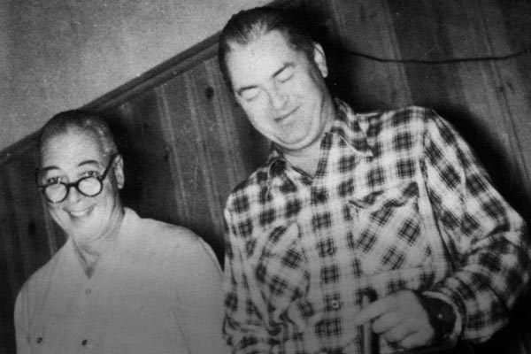

HIGH SCHOOL FOOTBALL
SportsDay’s Top 50 for 2016
Mapping where the best high school football recruits go to school in North Texas.
Staff Writer Corbett Smith ranks the top 50 senior football recruits for 2016 in North Texas. The larger the circle, the more recruits attend that school. Click the circles to see recruits by high school, or filter the recruits by position using the dropdown below:
View recruits by position:
Number of recruits
1 2 4The top 50 recruits
* Michael Irvin Jr. has withdrawn from Prestonwood.
Advertisement
Author: Corbett Smith
Editor: Scott Bell
Designer: John Hancock
More from The Dallas Morning News
Jim Dent: The man, his books and the bottle
The best-selling sports author’s passion for alcohol has landed him behind bars repeatedly since 1983.
New high point for Kaufman Co. eagles
A pair of eagles that nested near high-voltage lines now has a safer home thanks to Oncor, Falcon Steel and the John Bunker Sands Wetland Center.
Faded Echoes
But for the tragic death of Jim Beck in 1956, Dallas could have become, and some say would have become, Nashville.